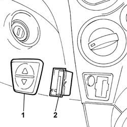

7005M10 driver's side front side door glass control switch (one) r r
- Path
- Procedures > 70 FITTINGS > 7005 PASSENGER COMPARTMENT FRONT SIDE DOORS > 7005M front electric windows > 7005M10 driver's side front side door glass control switch (one) r r
- Kind
- repair procedure (removal / refitting; the operation number is the code)
- Applies to
- all engines; all production periods
- Interactive page
- https://sloeber94.github.io/elrnDB-fPnd/en/#/2753068
Applies to: all engines; all production periods
 Removing
Removing
 Refitting
RefittingDisconnect the battery negative terminal.
1. Using a suitable tool, remove the surround.
Using a suitable tool, disengage the retaining clips and remove the switch.
Disconnect the electrical connection.
 | Name | Connector |
|---|---|---|
- | Driver's front electric window switch | H42 |
| Name | Connector |
|---|---|---|
- | Passenger's front electric window switch | H43 |
2. Remove the window control switch.

Applies to: all engines; all production periods
Refitting
RemovingConnect the electrical connection.
| Name | Connector |
|---|---|---|
- | Driver's front electric window switch | H42 |
| Name | Connector |
|---|---|---|
- | Passenger's front electric window switch | H43 |
Fit the window control switch in its seating and check that it is secure.
Fit the surround in its seating and check that it is secure.
Connect the battery negative terminal.